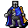
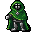
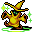

宝物庫 The Vaults
英語版 CrawlWiki の記事「The Vaults」(0.31 向け、2025-11-23 版)の翻訳です。原文の著者は編集履歴をご覧ください。
この記事は 0.31 の時点の内容で、最新の 0.34 とは違うところがあるかもしれません。
迷宮にあらかじめ用意された地形である「ヴォールト」とは別物。
| 力ある狂人が築いたものかもしれない宝物庫には、莫大な財宝が眠っていると言われる。入口のまわりにたっぷりと飛び散った血を見るかぎり、それなりの暴力も待っているようだ。
この分岐の入口は、迷宮の 13 階から 14 階のあいだにある。 この分岐から出るには、ゾットのルーンを少なくとも 1 つ持っていなければならない。 この分岐は 5 階層ある。 この分岐には地下墓地への入口がある。 この分岐には銀のルーンがある。 |
 宝物庫は、長く広い廊下と無数の部屋でできた 5 階層の分岐だ。宝物庫への門は迷宮の 13 階か 14 階にある。
宝物庫は、長く広い廊下と無数の部屋でできた 5 階層の分岐だ。宝物庫への門は迷宮の 13 階か 14 階にある。
いつでも入れるが、迷宮へ戻るにはゾットのルーンを(どこで手に入れたものでもよいので)少なくとも 1 つ持っていなければならない。ルーンを持たずに入ろうとすると、出るにはルーンが必要だと警告する確認が出る。
構造
宝物庫は、広い廊下と、形も大きさもさまざまな小部屋からなる、だだっ広い施設だ。部屋の多くは扉で仕切られている。この分岐は全体が掘れない素材、つまり石や金属、まれに水晶の壁でできている。気をつけていないと、上り階段から簡単に切り離されてしまう。見落とした敵が、こちらがもう半死半生のときに現れたりしないよう、部屋は順序立てて片付けていこう。
宝物庫:5
5 階目、つまり最下層では、この造りががらりと変わる。宝物庫:5 には、階のほぼ全体を占めるとても大きな長方形の部屋が 4 つある。どの部屋にも戦利品や店がぎっしり詰まっている。中央を十字形の廊下が貫き、外周も廊下になっている。銀のルーンはどれかの部屋にあるが、ルーンに化けたミミックもいる。
宝物庫:4 にある普通の下り階段は、3 つとも宝物庫:5 の中央に通じている。中央は必ず 24 体の宝物庫の番人と、ほかにも殺気立った住人たちに囲まれている。
宝物庫:5 には、タイタン、水銀ドラゴン、ゴールドドラゴン、リッチなど、分岐のほかの階よりずっと強いモンスターがいることが多い。
戦略
宝物庫にはじつにさまざまなモンスターが棲んでいて、迷宮の深いところや深層の浅いところに出る敵が多い。力まかせに殴り殺される危険はいつでもあるが、魔法を使うモンスターも多い。
群れで動く敵が大勢で現れる。洞窟トロルや上位のオークの一団から、遠くから撃ってくるヤクトールの部隊までいる。廊下が広く部屋も開けているので、敵を狭いところに引き込んだり、射線を遮ったりするのが難しい。
宝物庫にしかいない警備のモンスターは、それぞれに別の厄介さがある。
- p
 宝物庫の番人:重い武器と頑丈な防具を身につけた、図体ばかり大きいのろまな連中。数が多い。
宝物庫の番人:重い武器と頑丈な防具を身につけた、図体ばかり大きいのろまな連中。数が多い。 - p

宝物庫の警告者:近くの敵を起こし、こちらに番兵の標的をかけてくる。クロスボウを持っていることが多い。 - p
 宝物庫の監視者:まわりの扉や階段を封じてしまうので、先へ進むには倒すしかなくなる。
宝物庫の監視者:まわりの扉や階段を封じてしまうので、先へ進むには倒すしかなくなる。 - p
 鉄縛の招集者:階のほかの場所にいる敵を呼び寄せ、強化する。
鉄縛の招集者:階のほかの場所にいる敵を呼び寄せ、強化する。 - p

鉄縛の保護者:ほかの敵が受けるダメージの一部を肩代わりする。保護者が死ぬまで、敵の HP は実質 2 倍になる。 - p
 鉄縛の凍心者:壁ぎわに立っているものを何でも凍らせる。
鉄縛の凍心者:壁ぎわに立っているものを何でも凍らせる。 - O
 鉄縛の雷巨人:雷を浴びせてくるオーガ。ただし、離れたところからしか撃ってこない。
鉄縛の雷巨人:雷を浴びせてくるオーガ。ただし、離れたところからしか撃ってこない。


十分な火力を用意し、急がずに進もう。下りた階段の先がいきなり相手にしたくない戦いだったら、別の下り階段を使う心づもりもしておくこと。また、番兵の標的をかけられたら、できるだけ早く誰もいない階へ退くこと。ほとんど探索していない階でこれに呼ばれる増援は、手に負えないことがある。
準備が整うまで宝物庫:5 に入ってはいけない。1〜4 階で苦労したなら、5 階はおそらく手に余る。のぞきに下りただけでも即死しかねない。宝物庫:1〜4 を回ったらほかの分岐へ移り、あとでルーンを取りに下りてくるプレイヤーが多い。
宝物庫:5 の戦略
宝物庫:5 に下りたとたんに宝物庫の監視者に閉じ込められることもあるので、準備が大切だ。
準備
いつも以上に耐性が大事になる。シャドウドラゴンやストームドラゴンは、耐性がないと驚くほどのダメージを与えてくる。タイタンや闇エルフのような、属性攻撃をしてくるほかの敵もよく出る。
初めて宝物庫:5 に入るときは、下りる前に使える強化を使っておこう。加速、腕力強化、知性、英雄化や早業などだ。
- とりわけ大事なのが加速だ。番人の輪をすり抜けて廊下へ駆け込むにも、できるだけ多くの番人をすばやく倒すにも役に立つ。
- ここでは透明化はあまり役に立たない。宝物庫の番人も、この階でとくに危険な敵の多くも、みな霊視を持っているからだ。
戦術
入口のヴォールトを攻略するには、「定番の」作戦が 2〜3 通りある。どれか 1 つしか使えないわけではなく、いくつかを組み合わせる必要があるかもしれない。
- とはいえ、階段を使わせてくれない敵もいろいろいる。宝物庫の監視者は階段を封じるし、触手の怪物は締めつけてくるし、ドラゴンは踏みつけで押しのけてくる。敵を狙い撃ちする手段(ジャベリン、各種の高レベル呪文、攻撃用の祈祷、発動アイテムなど)があると心強い。
- また、階段を下りるのが危険すぎる状況になることもある。テレポートで逃げるのがいちばんということもある。詳しくは下を参照。
- テレポート作戦。要はテレポートする(または脱出ハッチを使う)ことで、ランダムな場所に降り立つというものだ。うまくいけば階の外周に沿った敵の少ない廊下に出られるので、そこから順序立てて階を片付けはじめられる。目指すのは隅にたどり着き、(近くのモンスターを倒して)安全に休める場所を作ることだ。
- もちろん、宝の部屋のど真ん中に、ずっと恐ろしい敵の詰め合わせと一緒に放り込まれることもある。よい場所に出るまで何度もテレポートしなければならないかもしれないので、早めに、何度でもテレポートしよう。強化はぜひかけておきたい。
- 走り抜け作戦。テレポート作戦に似ているが、実際にテレポートするのではなく、入口の一団を走り抜けて廊下を通り、隅を目指す。瞬間移動と加速、または瞬間移動の巻物でできる。理屈の上では、集団を抑える手段で隙間を作って、加速して走り抜けることもできる。
- 派手に暴れる。行く手にいるものをすべて吹き飛ばしていく。長く戦い続けられるなら、広い範囲攻撃を使うのもよい手だ。ただし(少なくとも中央で戦うときは)、自分の立てる騒音で 4 つの部屋のモンスターが目を覚まし、おびき出されてくることに気をつけよう。
- 焼き討ちの巻物を使えば入口の宝物庫の番人たちをなぎ倒せるが、火炎耐性はできるかぎり高めておくことが絶対に必要だ。番人(やほかの敵)に向けて巻物を読み、連鎖反応を起こそう。ものすごくうるさいので敵がわんさと寄ってくるが、うまく決まれば文字どおり爆発的に楽しい。外周へテレポートするつもりなら、中央で騒ぎを起こすのはかえって好都合だ。
- 範囲攻撃の呪文:凍気の雲、星の炸裂、オルグレブの毒気の光輪と毒の燃焼の組み合わせ、エリンギャの毒沼、それに点火や極渦のような高レベルの呪文で一掃できる。
- 精神不和は集団を片付けるのに強力だが、狂乱したモンスターを自分も相手にしなければならない点に注意。代謝の凍結やアリステイアの酩酊のような、まとめて弱体化させる呪文も効果的だ。
宝物庫:5 で起こりうる最悪の事態のひとつが、番兵の標的をかけられることだ。そうなったら無力化の薬を飲むか、すぐに階段を上って宝物庫:4 へ退こう。
派手に暴れるつもりがなくても、何かしらの範囲攻撃があると心強い。呪文がなくても、神の能力(ケイブリアドスの素早きものの屈服、ネメレクスの破壊のデッキ、ルーの黙示録、クァズラルの天よりの災禍など)で穴を埋められる。どんなキャラクターでも、発動スキルが高ければ発動アイテム(凝結の風見や震動石の缶)が頼りになる。
呪文使いは、とくにテレポートするときは MP に気を配ること。邪悪なる通り道や魔火花の従者のような「MP 効率のよい」呪文がとても役に立つ。機会があれば知性の薬やアンブロシアの薬を使うのを忘れずに。
モンスター
| c |
c |
c |
o |
o |
| Y |
J |
H |
k |
g  ボガート |
| p |
p 宝物庫の警告者 | p |
p |
p 鉄縛の保護者 |
| p |
O |
T |
B |
p |
| p |
u |
G |
G |
H |
| 9 |
9 |
9 |

宝物庫:5
上の一覧の敵もほとんどが出る。
比較的楽な敵
| p |
W |
W |
W |
W |
| e |
e |
e |
e |
e |
| C |
C |
C |
C |
O |
| T |
Q |
L |
手ごわい敵
| D |
D |
D |
D |
| C |
X |
L |
L |
ユニーク
| S |
H |
d |
L |
@ |
| @ |
V |
R |
@ |
A |
| @ |
o |
Q |
D |
a |
変更履歴
- 0.30 より前は、この分岐に入るのにゾットのルーンが 1 つ必要だった(今はこの条件が出るときに移っている)。
- 0.28 で鉄縛の猛獣使いが削除された。
- 0.27 で鉄縛の凍心者、鉄縛の雷巨人、鉄縛の猛獣使いが追加された。あわせて、宝物庫に出ていた弱めの敵の多くが数を減らされるか、すっかり取り除かれた。
- 0.14 より前は、この分岐に入るのにゾットのルーンは要らず、入口は迷宮:15〜20 にあった。また、宝物庫:5 の 4 つの部屋には、階の中央にいちばん近い角にしか入口がなかった。
- 0.12 より前は、宝物庫は 8 階層あり、最初の 7 階はどれも長方形の部屋が点在する広々とした場所だった。また、ここにいる警備役のモンスターは宝物庫の番人だけで、たいてい 8 階目に出た。
| 分岐の一覧 |
|---|
| |
| 関連項目: ポータル |